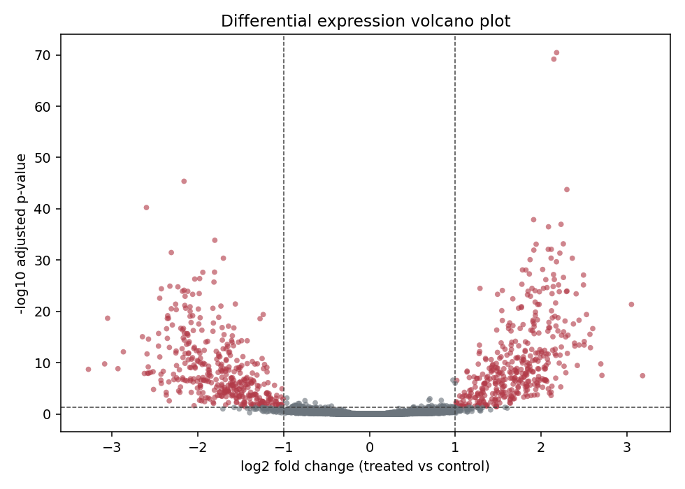
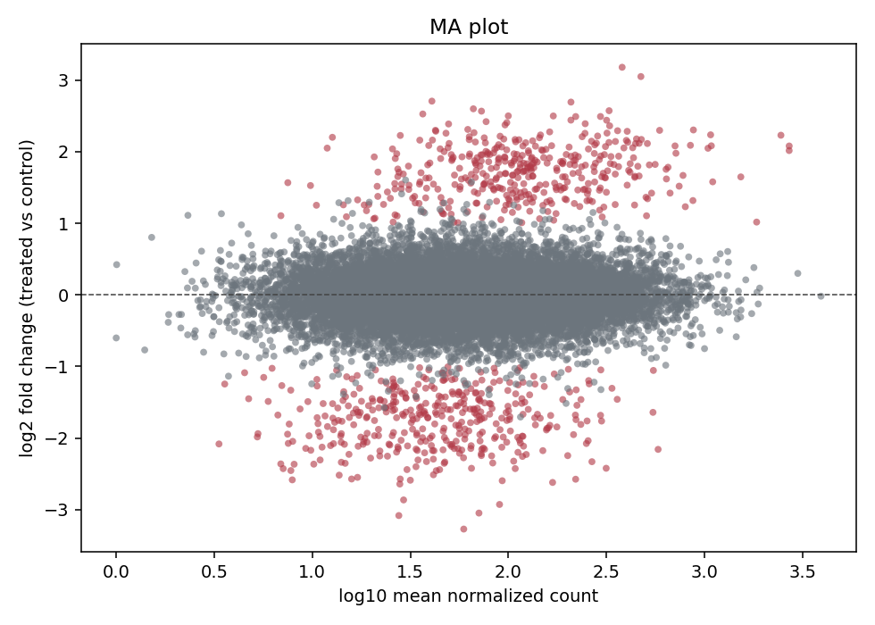
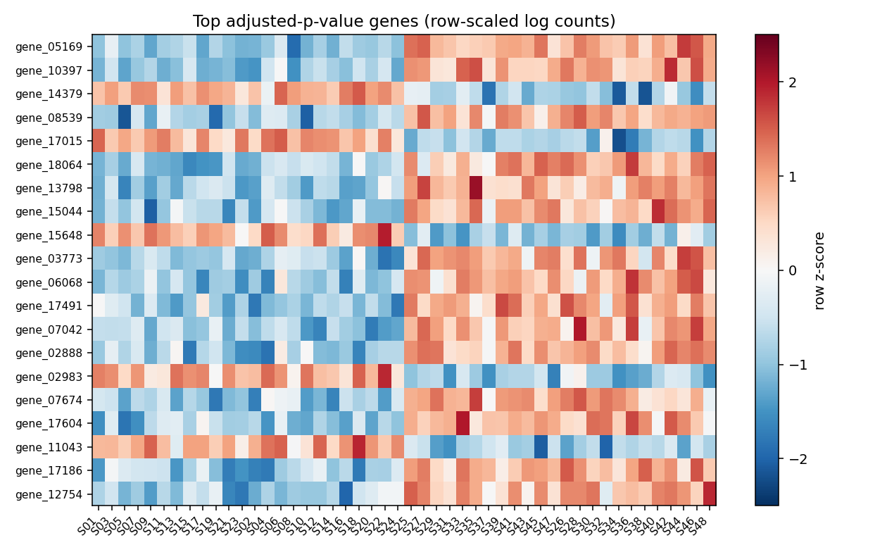
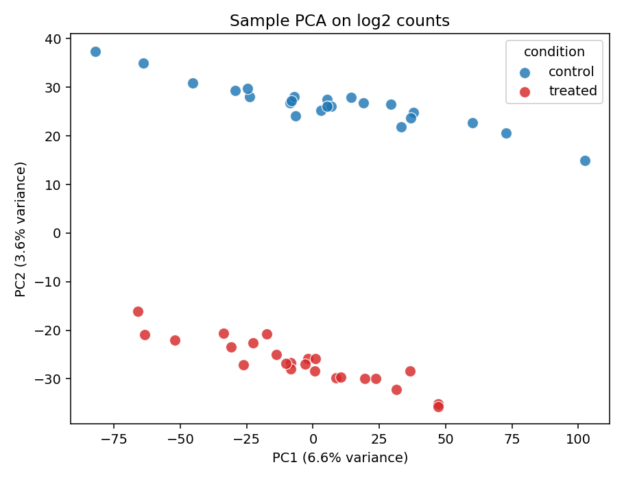

DESeq toy workflow report
This report uses synthetic data generated for architecture testing. It is not biological evidence.
Samples48
Genes tested20000
Significant genes847
Contrasttreated vs control
Top genes
| gene_id | baseMean | log2FoldChange | lfcSE | stat | pvalue | padj |
|---|---|---|---|---|---|---|
| gene_05169 | 450.6 | 2.179 | 0.1185 | 18.38 | 1.747e-75 | 3.494e-71 |
| gene_10397 | 265.7 | 2.147 | 0.1181 | 18.19 | 6.508e-74 | 6.508e-70 |
| gene_14379 | 580.8 | -2.159 | 0.1454 | -14.86 | 6.333e-50 | 4.222e-46 |
| gene_08539 | 591.1 | 2.299 | 0.1576 | 14.58 | 3.519e-48 | 1.76e-44 |
| gene_17015 | 93.09 | -2.597 | 0.1854 | -14.01 | 1.398e-44 | 5.591e-41 |
| gene_18064 | 89.5 | 1.912 | 0.1405 | 13.6 | 3.936e-42 | 1.312e-38 |
| gene_13798 | 2457 | 2.231 | 0.166 | 13.44 | 3.687e-41 | 1.053e-37 |
| gene_15044 | 166.3 | 2.085 | 0.1562 | 13.34 | 1.272e-40 | 3.18e-37 |
| gene_15648 | 86.71 | -1.801 | 0.1399 | -12.88 | 6.126e-38 | 1.361e-34 |
| gene_03773 | 246.1 | 2.257 | 0.1771 | 12.74 | 3.363e-37 | 6.726e-34 |
| gene_06068 | 296.3 | 1.941 | 0.1525 | 12.72 | 4.347e-37 | 7.904e-34 |
| gene_17491 | 708.6 | 2.082 | 0.1661 | 12.53 | 4.972e-36 | 7.951e-33 |
| gene_07042 | 464.9 | 2.117 | 0.169 | 12.53 | 5.168e-36 | 7.951e-33 |
| gene_02888 | 162.3 | 1.914 | 0.1532 | 12.5 | 7.925e-36 | 1.132e-32 |
| gene_02983 | 34.62 | -2.308 | 0.1861 | -12.4 | 2.531e-35 | 3.375e-32 |
| gene_07674 | 90.82 | 2.217 | 0.1791 | 12.38 | 3.463e-35 | 4.329e-32 |
| gene_17604 | 445.7 | 2.115 | 0.1735 | 12.19 | 3.547e-34 | 4.172e-31 |
| gene_11043 | 101.8 | -1.701 | 0.1396 | -12.18 | 3.858e-34 | 4.287e-31 |
| gene_17186 | 328.7 | 2.362 | 0.194 | 12.18 | 4.086e-34 | 4.302e-31 |
| gene_12754 | 106.9 | 1.87 | 0.1543 | 12.12 | 8.251e-34 | 8.251e-31 |
| gene_19468 | 94.82 | 2.177 | 0.1809 | 12.04 | 2.229e-33 | 2.123e-30 |
| gene_06503 | 2707 | 2.017 | 0.1717 | 11.75 | 7.356e-32 | 6.687e-29 |
| gene_08425 | 126.3 | 1.782 | 0.152 | 11.73 | 9.463e-32 | 8.228e-29 |
| gene_12428 | 206 | 1.822 | 0.1555 | 11.72 | 1.052e-31 | 8.77e-29 |
| gene_13592 | 42.15 | -1.804 | 0.1551 | -11.63 | 2.778e-31 | 2.222e-28 |
Diagnostic plots
The portfolio page exposes these same job-specific files through the artifact API.
- Contrast
- treated vs control
- Condition column
- condition
- Batch column
- batch
- Minimum count
- 10
- Design
- ~batch+condition



